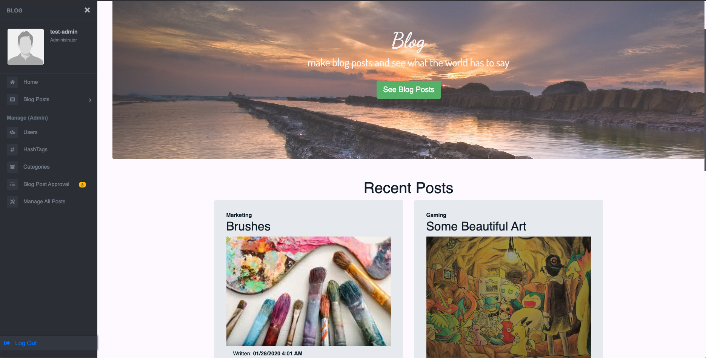
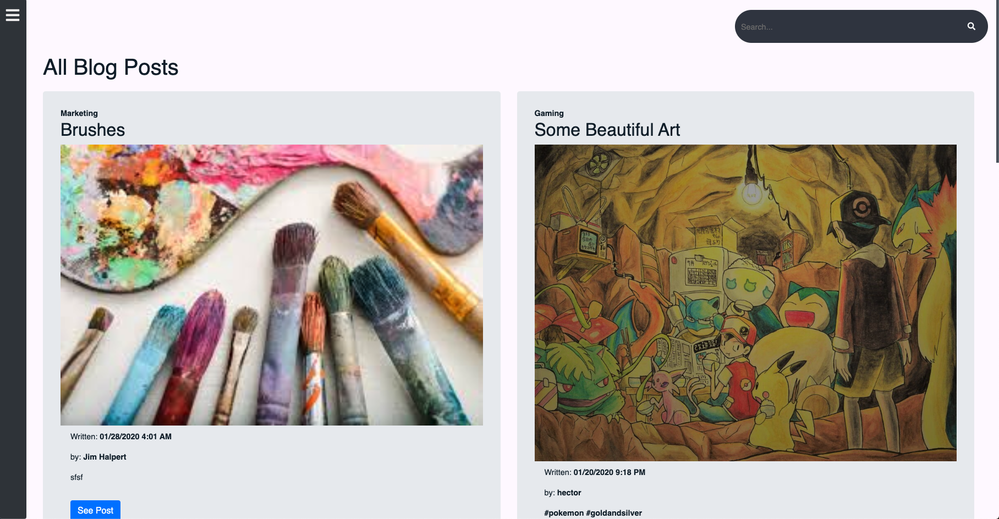
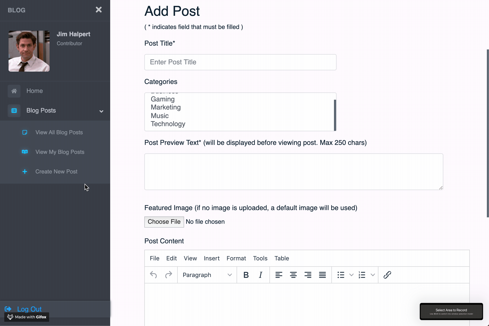

Project: 'BlogPosts'
Documentation/Info
● Technologies Used: Java, Spring Boot, JDBC Template, MySQL, Thymeleaf, JavaScript, Spring Security
source code This project is a multi-page dynamic Spring Boot Full Stack Web Application using the MVC design pattern and incorporating a MySQL database and Spring Security. For the front-end I used Thymeleaf which is a modern server-side Java template engine. This allows us to build HTML pages and put some logic in the HTML so we can conditionally render pieces of the page or render lists. It's an application I made as a project for my coding bootcamp. It allows users to create, read/view, update, and delete (CRUD) blog posts.
The posts are displayed as these "cards" that have the basic properties that make up the Post object. A post is made up of:
-
Post Object Class Structure
- Id
- Title
- Preview Text
- Date
- Content
- isPublished (Y/N)
- Featured Image Path
- User/Author
- List Of: Categories
- List Of: Hash Tags
Posts have categories and hashtags. These are other objects that both have a many to many relationship with Posts.
Below, I added some comments to this image to show how each property is displayed.
The app also allows users to have different roles with security that hides website functionality based on role. This was achieved using Spring Security. These roles are Admin and Contributer. So this means that anyone who doesn't have log-in information can only view Home and Content.
Once a user logs in, They gain more functionality such as they above mentioned (CRUD) for posts. Let's log in as a contributer.

The table in the right gif was made to be responsive. Here's what it looks like on a phone or smaller screen. This was done using CSS media queries on different page sizes.

The side-bar has allowed access to new features. A button to create posts, and another to manage them.
The Post content input area uses TinyMCE which is a great text editor that can be used for writing up a post.
Here the user finds access to choose which pre-determined category the post falls under (these are admin only in terms creating or managing, as by design). The user can create and add hash tags within the TinyMCE content area. Simply type in a '#' followed by a series of words, no spaces to automaticall create a new hash tag in the database. Ex. "#thisisahashtag". If the hash tag already exists, the program does not create a new one, but still adds it to the post. Using the search function in content or when mananing posts, you can search by hash tag and all posts with that hash tag should show up. This was accomplished by a Regex expression that is used to match any strings with that pattern and when a match is found, it adds it to the database.You'll also notice there are images on the site, with the user's and with the posts. This was accomplished using the dropbox API to upload images directly to a dropbox account that I set up for this site. It's pretty cool using this as a free way to store images. This wouldn't cut it in a real world application, but I found it to be resourceful.
Now although any contributer can create a post, and view/manage their own posts, the post will not go 'live' unless approved by an admin. The property 'isPublished' will not be set to true unless an admin goes in and approves it. Let's move on to admins.
Admin's have total access to everything a contributer can do in addition to, edit and create users, give user's roles, approve posts, manage all published posts, manage categories and hashtags. An admin will recieve a numbered badge with the number of posts waiting to be approved, 3 posts are waiting to be approved in this image.
Admin's will be able to check off on a users post by clicking the green check marked, 'Approve'. They can also view all published posts and edit them on the fly without removing the post from the main feed of already published posts.

User's can view the post in it's own page that can be linked. Also if you are logged in, you can add comments to a post. Contributer's can only delete their own comments and an admin can delete any comment.
There was alot more that went into building this project, you can check out the source code here. This links to an earlier build before I added dropbox functionality (final repo must remain private due to API key) and before I added extra CSS to create the responsive tables. You can also see the DDL for the database, the ERD, and the project's UML. If you would like to test out the application, visit it here. Since you took out the time to read this, you can try out the contributer features by using the login Jim Halpert and the password is password.